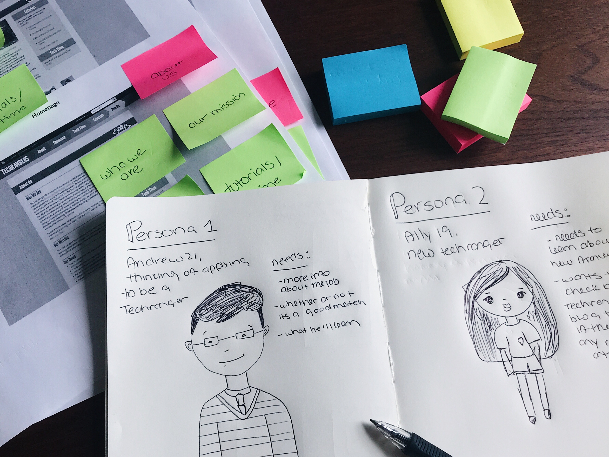
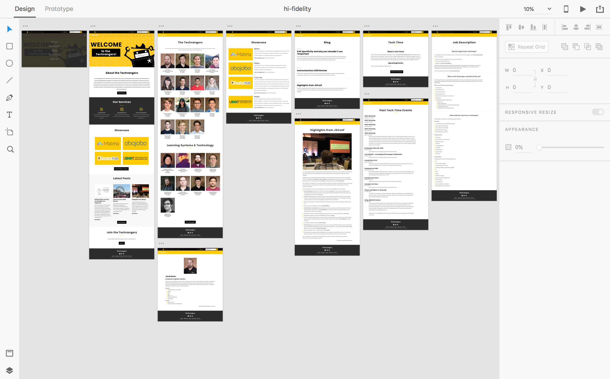

techrangers site redesign

The Techrangers team is comprised of talented students at the Center for Distributed Learning, who provide course development for faculty and web/application development for the University of Central Florida. While the Techrangers already had a website designed, it had not been updated since 2012. As a Hack Day project, I pitched the idea to redesign their current site to match the university’s overall theme and to provide future Techrangers a source where they can learn more about development.
4 months
Alexandra Guevara & Kylee Woodland
UX/UI Research & Design, Development
My role as a UX designer was to conduct research into the client’s previous website and assess what needed to be removed or updated, prior to the kick-off. Then, I worked extensively on user research and user flows in order to cater the site to its primary users. As a developer, I wrote clean code that followed W3C standards to make it easy for future developers to maintain.
The main challenge during the first phase of the redesign was meeting the University of Central Florida’s theme. The previous design did not take into consideration the university’s color scheme which made the website feel out of place. Another issue we faced was developing the website to be fully responsive and to meet W3C standards. The client also wanted to add a blog feature, tutorials, and update their content to meet the Techrangers mission statement.
After speaking to the Techrangers Team Lead, I created a user flow of the primary user of the website. Once I had a solid understanding of who the primary users of the site were going to be, I was able to come up with design ideas for the site. I took into consideration the color scheme, the new features, and any other concerns that came along the way.
We conducted a group interview with CDL developers, current Techrangers and their team leads to get their input on the new site design. We started by going over the old site pages to decide what we wanted to keep/remove. Once we had the pages up on the board, we grouped the pages that could be part of the same section (i.e. tutorials page merged in new blog page). We continued this process until there was less of a clutter in each page.
Some of the questiosns we asked:
This gave us insightful information about the current state of the website:
We learned the new website will be managed by the Techrangers in order to serve as a place where they can learn more about development and technical writing. But, we also learned the new site needed to be a source for Techranger prospects to look for more information about the job. This meant, the primary user of the site will be a Techranger prospect. I create a brief user flow to show how this user would navigate the site. As a secondary user, we created a current Techranger persona and showed how this user would navigate the site.
Andrew
Andrew was on Reddit when he saw a thread by the Techrangers saying they’re hiring. He clicks on the link, reads the job description and decides to do a little more research on the Techrangers before applying. He does a quick Google search and finds the Techrangers site. He starts browsing and learns more about the Techrangers and what they do.

Ally
Ally just started her role at the Techrangers. She comes from a graphic design background with little development experience. She has been asked to create a website using Bootstrap, a popular framework. The designs have already been provided to her but she still needs to learn about the framework she’ll be using. As she’s about to go on Google to learn more about Bootstrap, she remembers one of the developers at work wrote an article that might be of help to her.
The Techrangers have been known for their robot ranger icon ever since their original site launched. Kylee made a few adjustments to the original design such as:
During the first meeting, I sketched out some ideas using pen and paper before moving into our lo-fidelity wireframes. Once I had more of an idea as to what the client wanted, I moved on to Adobe XD to design the lo-fidelity prototype to determine information architecture, key features and functionalities.
After designing the lo-fidelity prototype, I met with the client to perform an evaluation of the designs. During this phase, I made several improvements, including:
Once I fixed the issues from the lo-fidelity prototypes, I moved to hi-fidelity prototypes.
Once the hi-fidelity protoypes were finished, we conducted a second evaluation. We printed out the new designs and distributed them to client to make sure we didn't miss anything.

The Techrangers website will be maintained by the client and will serve as a learning platform for the Techrangers where they can learn development and technical writing. This new site will also serve as a portfolio for all the projects the Techrangers have contributed to.
If you’d like to reach out about a project or just to chat, just drop me a message at alexandra.guevara@outlook.com. I’m currently available for freelance or full-time job opportunities.